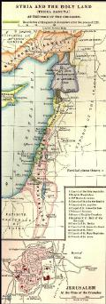

|
| A B C D E F G H I J K L M N O P Q R S T U V W X Y Z |
 The Crusades were expeditions undertaken, in fulfilment of a solemn vow, to deliver the Holy Places from Mohammedan tyranny.
The origin of the word may be traced to the cross made of cloth and worn as a badge on the outer garment of those who took part in these enterprises. Medieval writers use the terms crux (pro cruce transmarina, Charter of 1284, cited by Du Cange s.v. crux), croisement (Joinville), croiserie (Monstrelet), etc. Since the Middle Ages the meaning of the word crusade has been extended to include all wars undertaken in pursuance of a vow, and directed against infidels, i.e. against Mohammedans, pagans, heretics, or those under the ban of excommunication. The wars waged by the Spaniards against the Moors constituted a continual crusade from the eleventh to the sixteenth century; in the north of Europe crusades were organized against the Prussians and Lithuanians; the extermination of the Albigensian heresy was due to a crusade, and, in the thirteenth century the popes preached crusades against John Lackland and Frederick II. But modern literature has abused the word by applying it to all wars of a religious character, as, for instance, the expedition of Heraclius against the Persians in the seventh century and the conquest of Saxony by Charlemagne.
The idea of the crusade corresponds to a political conception which was realized in Christendom only from the eleventh to the fifteenth century; this supposes a union of all peoples and sovereigns under the direction of the popes. All crusades were announced by preaching. After pronouncing a solemn vow, each warrior received a cross from the hands of the pope or his legates, and was thenceforth considered a soldier of the Church. Crusaders were also granted indulgences and temporal privileges, such as exemption from civil jurisdiction, inviolability of persons or lands, etc. Of all these wars undertaken in the name of Christendom, the most important were the Eastern Crusades, which are the only ones treated in this article.
It has been customary to describe the Crusades as eight in number:
This division is arbitrary and excludes many important expeditions, among them those of the fourteenth and fifteenth centuries. In reality the Crusades continued until the end of the seventeenth century, the crusade of Lepanto occurring in 1571, that of Hungary in 1664, and the crusade of the Duke of Burgundy to Candia, in 1669. A more scientific division is based on the history of the Christian settlements in the East; therefore the subject will be considered in the following order:
I. Origin of the Crusades;
II. Foundation of Christian states in the East;
III. First destruction of the Christian states (1144-87);
IV. Attempts to restore the Christian states and the crusade against Saint-Jean d'Acre (1192-98);
V. The crusade against Constantinople (1204);
VI. The thirteenth-century crusades (1217-52);
VII. Final loss of the Christian colonies of the East (1254-91);
VIII. The fourteenth-century crusade and the Ottoman invasion;
IX. The crusade in the fifteenth century;
X. Modifications and survival of the idea of the crusade.
The origin of the Crusades is directly traceable to the moral and political condition of Western Christendom in the eleventh century. At that time Europe was divided into numerous states whose sovereigns were absorbed in tedious and petty territorial disputes while the emperor, in theory the temporal head of Christendom, was wasting his strength in the quarrel over Investitures. The popes alone had maintained a just estimate of Christian unity; they realized to what extent the interests of Europe were threatened by the Byzantine Empire and the Mohammedan tribes, and they alone had a foreign policy whose traditions were formed under Leo IX and Gregory VII. The reform effected in the Church and the papacy through the influence of the monks of Cluny had increased the prestige of the Roman pontiff in the eyes of all Christian nations; hence none but the pope could inaugurate the international movement that culminated in the Crusades. But despite his eminent authority the pope could never have persuaded the Western peoples to arm themselves for the conquest of the Holy Land had not the immemorial relations between Syria and the West favoured his design. Europeans listened to the voice of Urban II because their own inclination and historic traditions impelled them towards the Holy Sepulchre.
From the end of the fifth century there had been no break in their intercourse with the Orient. In the early Christian period colonies of Syrians had introduced the religious ideas, art, and culture of the East into the large cities of Gaul and Italy. The Western Christians in turn journeyed in large numbers to Syria, Palestine, and Egypt, either to visit the Holy Places or to follow the ascetic life among the monks of the Thebaid or Sinai. There is still extant the itinerary of a pilgrimage from Bordeaux to Jerusalem, dated 333; in 385 St. Jerome and St. Paula founded the first Latin monasteries at Bethlehem. Even the Barbarian invasion did not seem to dampen the ardour for pilgrimages to the East. The Itinerary of St. Silvia (Etheria) shows the organization of these expeditions, which were directed by clerics and escorted by armed troops. In the year 600, St. Gregory the Great had a hospice erected in Jerusalem for the accommodation of pilgrims, sent alms to the monks of Mount Sinai ("Vita Gregorii" in "Acta SS.", March 11, 132), and, although the deplorable condition of Eastern Christendom after the Arab invasion rendered this intercourse more difficult, it did not by any means cease.
As early as the eighth century Anglo-Saxons underwent the greatest hardships to visit Jerusalem. The journey of St. Willibald, Bishop of Eichstädt, took seven years (722-29) and furnishes an idea of the varied and severe trials to which pilgrims were subject (Itiner. Latina, 1, 241-283). After their conquest of the West, the Carolingians endeavoured to improve the condition of the Latins settled in the East; in 762 Pepin the Short entered into negotiations with the Caliph of Bagdad. In Rome, on 30 November, 800, the very day on which Leo III invoked the arbitration of Charlemagne, ambassadors from Haroun al-Raschid delivered to the King of the Franks the keys of the Holy Sepulchre, the banner of Jersualem, and some precious relics (Einhard, "Annales", ad an. 800, in "Mon. Germ. Hist.: Script.", I, 187); this was an acknowledgment of the Frankish protectorate over the Christians of Jerusalem. That churches and monasteries were built at Charlemagne's expense is attested by a sort of a census of the monasteries of Jerusalem dated 808 ("Commemoratio de Casis Dei" in "Itiner. Hieros.", I, 209). In 870, at the time of the pilgrimage of Bernard the Monk (Itiner. Hierosol., I, 314), these institutions were still very prosperous, and it has been abundantly proved that alms were sent regularly from the West to the Holy Land. In the tenth century, just when the political and social order of Europe was most troubled, knights, bishops, and abbots, actuated by devotion and a taste for adventure, were wont to visit Jerusalem and pray at the Holy Sepulchre without being molested by the Mohammedans. Suddenly, in 1009, Hakem, the Fatimite Caliph of Egypt, in a fit of madness ordered the destruction of the Holy Sepulchre and all the Christian establishments in Jerusalem. For years thereafter Christians were cruelly persecuted. (See the recital of an eyewitness, Iahja of Antioch, in Schlumberger's "Epopée byzantine", II, 442.) In 1027 the Frankish protectorate was overthrown and replaced by that of the Byzantine emperors, to whose diplomacy was due the reconstruction of the Holy Sepulchre. The Christian quarter was even surrounded by a wall, and some Amalfi merchants, vassals of the Greek emperors, built hospices in Jerusalem for pilgrims, e.g. the Hospital of St. John, cradle of the Order of Hospitallers.
Instead of diminishing, the enthusiasm of Western Christians for the pilgrimage to Jerusalem seemed rather to increase during the eleventh century. Not only princes, bishops, and knights, but even men and women of the humbler classes undertook the holy journey (Radulphus Glaber, IV, vi). Whole armies of pilgrims traversed Europe, and in the valley of the Danube hospices were established where they could replenish their provisions. In 1026 Richard, Abbot of Saint-Vannes, led 700 pilgrims into Palestine at the expense of Richard II, Duke of Normandy. In 1065 over 12,000 Germans who had crossed Europe under the command of Günther, Bishop of Bamberg, while on their way through Palestine had to seek shelter in a ruined fortress, where they defended themselves against a troop of Bedouins (Lambert of Hersfeld, in "Mon. Germ. Hist.: Script.", V, 168). Thus it is evident that at the close of the eleventh century the route to Palestine was familiar enough to Western Christians who looked upon the Holy Sepulchre as the most venerable of relics and were ready to brave any peril in order to visit it. The memory of Charlemagne's protectorate still lived, and a trace of it is to be found in the medieval legend of this emperor's journey to Palestine (Gaston Paris in "Romania", 1880, p. 23).
The rise of the Seljukian Turks, however, compromised the safety of pilgrims and even threatened the independence of the Byzantine Empire and of all Christendom. In 1070 Jerusalem was taken, and in 1071 Diogenes, the Greek emperor, was defeated and made captive at Mantzikert. Asia Minor and all of Syria became the prey of the Turks. Antioch succumbed in 1084, and by 1092 not one of the great metropolitan sees of Asia remained in the possession of the Christians. Although separated from the communion of Rome since the schism of Michael Cærularius (1054), the emperors of Constantinople implored the assistance of the popes; in 1073 letters were exchanged on the subject between Michael VII and Gregory VII. The pope seriously contemplated leading a force of 50,000 men to the East in order to re-establish Christian unity, repulse the Turks, and rescue the Holy Sepulchre. But the idea of the crusade constituted only a part of this magnificent plan. (The letters of Gregory VII are in P.L., CXLVIII, 300, 325, 329, 386; cf. Riant's critical discussion in Archives de l'Orient Latin, I, 56.) The conflict over the Investitures in 1076 compelled the pope to abandon his projects; the Emperors Nicephorus Botaniates and Alexius Comnenus were unfavourable to a religious union with Rome; finally war broke out between the Byzantine Empire and the Normans of the Two Sicilies.
It was Pope Urban II who took up the plans of Gregory VII and gave them more definite shape. A letter from Alexius Comnenus to Robert, Count of Flanders, recorded by the chroniclers, Guibert de Nogent ("Historiens Occidentaux des Croisades", ed. by the Académie des Inscriptions, IV, 131) and Hugues de Fleury (in "Mon. Germ. Hist.: Script.", IX, 392), seems to imply that the crusade was instigated by the Byzantine emperor, but this has been proved false (Chalandon, Essai sur le règne d'Alexis Comnène, appendix), Alexius having merely sought to enroll five hundred Flemish knights in the imperial army (Anna Comnena, Alexiad., VII, iv). The honour of initiating the crusade has also been attributed to Peter the Hermit, a recluse of Picardy, who, after a pilgrimage to Jerusalem and a vision in the church of the Holy Sepulchre, went to Urban II and was commissioned by him to preach the crusade. However, though eyewitnesses of the crusade mention his preaching, they do not ascribe to him the all-important rôle assigned him later by various chroniclers, e.g. Albert of Aix and especially William of Tyre. (See Hagenmeyer, Peter der Eremite Leipzig, 1879.) The idea of the crusade is chiefly attributed to Pope Urban II (1095), and the motives that actuated him are clearly set forth by his contemporaries: "On beholding the enormous injury that all, clergy or people, brought upon the Christian Faith . . . at the news that the Rumanian provinces had been taken from the Christians by the Turks, moved with compassion and impelled by the love of God, he crossed the mountains and descended into Gaul" (Foucher de Chartres, I, in "Histoire des Crois.", III, 321). Of course it is possible that in order to swell his forces, Alexius Comnenus solicited assistance in the West; however, it was not he but the pope who agitated the great movement which filled the Greeks with anxiety and terror.
After travelling through Burgundy and the south of France, Urban II convoked a council at Clermont-Ferrand, in Auvergne. It was attended by fourteen archbishops, 250 bishops, and 400 abbots; moreover a great number of knights and men of all conditions came and encamped on the plain of Chantoin, to the east of Clermont, 18-28 November, 1095. On 27 November, the pope himself addressed the assembled multitudes, exhorting them to go forth and rescue the Holy Sepulchre. Amid wonderful enthusiasm and cries of "God wills it!" all rushed towards the pontiff to pledge themselves by vow to depart for the Holy Land and receive the cross of red material to be worn on the shoulder. At the same time the pope sent letters to all Christian nations, and the movement made rapid headway throughout Europe. Preachers of the crusade appeared everywhere, and on all sides sprang up disorganized, undisciplined, penniless hordes, almost destitute of equipment, who, surging eastward through the valley of the Danube, plundered as they went along and murdered the Jews in the German cities. One of these bands, headed by Folkmar, a German cleric, was slaughtered by the Hungarians. Peter the Hermit, however, and the German knight, Walter the Pennyless (Gautier Sans Avoir), finally reached Constantinople with their disorganized troops. To save the city from plunder Alexius Comnenus ordered them to be conveyed across the Bosporus (August, 1096); in Asia Minor they turned to pillage and were nearly all slain by the Turks. Meanwhile the regular crusade was being organized in the West and, according to a well-conceived plan, the four principal armies were to meet at Constantinople.
The appearance of the crusading armies at Constantinople raised the greatest trouble, and helped to bring about in the future irremediable misunderstandings between the Greeks and the Latin Christians. The unsolicited invasion of the latter alarmed Alexius, who tried to prevent the concentration of all these forces at Constantinople by transporting to Asia Minor each Western army in the order of its arrival; moreover, he endeavoured to extort from the leaders of the crusade a promise that they would restore to the Greek Empire the lands they were about to conquer. After resisting the imperial entreaties throughout the winter, Godfrey of Bouillon, hemmed in at Pera, at length consented to take the oath of fealty. Bohemond, Robert Courte-Heuse, Stephen of Blois, and the other crusading chiefs unhesitatingly assumed the same obligation; Raymond of St-Gilles, however, remained obdurate.
Transported into Asia Minor, the crusaders laid siege to the city of Nicæa, but Alexius negotiated with the Turks, had the city delivered to him, and prohibited the crusaders from entering it (1 June, 1097). After their victory over the Turks at the battle of Dorylæum on 1 July, 1097, the Christians entered upon the high plateaux of Asia Minor. Constantly harrassed by a relentless enemy, overcome by the excessive heat, and sinking under the weight of their leathern armour covered with iron scales, their sufferings were wellnigh intolerable. In September, 1097, Tancred and Baldwin, brothers of Godfrey of Bouillon, left the bulk of the army and entered Armenian territory. At Tarsus a feud almost broke out between them, but fortunately they became reconciled. Tancred took possession of the towns of Cilicia, whilst Baldwin, summoned by the Armenians, crossed the Euphrates in October, 1097, and, after marrying an Armenian princess, was proclaimed Lord of Edessa. Meanwhile the crusaders, revictualled by the Armenians of the Taurus region, made their way into Syria and on 20 October, 1097, reached the fortified city of Antioch, which was protected by a wall flanked with 450 towers, stocked by the Ameer Jagi-Sian with immense quantities of provisions. Thanks to the assistance of carpenters and engineers who belonged to a Genoese fleet that had arrived at the mouth of the Orontes, the crusaders were enabled to construct battering-machines and to begin the siege of the city. Eventually Bohemond negotiated with a Turkish chief who surrendered one of the towers, and on the night of 2 June, 1098, the crusaders took Antioch by storm. The very next day they were in turn besieged within the city by the army of Kerbûga, Ameer of Mosul. Plague and famine cruelly decimated their ranks, and many of them, among others Stephen of Blois, escaped under cover of night. The army was on the verge of giving way to discouragement when its spirits were suddenly revived by the discovery of the Holy Lance, resulting from the dream of a Provençal priest named Pierre Barthélemy. On 28 June, 1098, Kerbûga's army was effectually repulsed, but, instead of marching on Jerusalem without delay, the chiefs spent several months in a quarrel due to the rivalry of Raymond of Saint-Gilles and Bohemond, both of whom claimed the right to Antioch. It was not until April, 1099, that the march towards Jerusalem was begun, Bohemond remaining in possession of Antioch while Raymond seized on Tripoli. On 7 June the crusaders began the siege of Jerusalem. Their predicament would have been serious, indeed, had not another Genoese fleet arrived at Jaffa and, as at Antioch, furnished the engineers necessary for a siege. After a general procession which the crusaders made barefooted around the city walls amid the insults and incantations of Mohammedan sorcerers, the attack began 14 July, 1099. Next day the Christians entered Jerusalem from all sides and slew its inhabitants regardless of age or sex. Having accomplished their pilgrimage to the Holy Sepulchre, the knights chose as lord of the new conquest Godfrey of Bouillon, who called himself "Defender of the Holy Sepulchre". They had then to repulse an Egyptian army, which was defeated at Ascalon, 12 August, 1099. Their position was nevertheless very insecure. Alexius Comnenus threatened the principality of Antioch, and in 1100 Bohemond himself was made prisoner by the Turks, while most of the cities on the coast were still under Mohammedan control. Before his death, 29 July, 1099, Urban II once more proclaimed the crusade. In 1101 three expeditions crossed Europe under the leadership of Count Stephen of Blois, Duke William IX of Aquitaine, and Welf IV, Duke of Bavaria. All three managed to reach Asia Minor, but were massacred by the Turks. On his release from prison Bohemond attacked the Byzantine Empire, but was surrounded by the imperial army and forced to acknowledge himself the vassal of Alexius. On Bohemond's death, however, in 1111, Tancred refused to live up to the treaty and retained Antioch. Godfrey of Bouillon died at Jerusalem 18 July, 1100. His brother and successor, Baldwin of Edessa, was crowned King of Jerusalem in the Basilica of Bethlehem, 25 December, 1100. In 1112, with the aid of Norwegians under Sigurd Jorsalafari and the support of Genoese, Pisan, and Venetian fleets, Baldwin I began the conquest of the ports of Syria, which was completed in 1124 by the capture of Tyre. Ascalon alone kept an Egyptian garrison until 1153.
At this period the Christian states formed an extensive and unbroken territory between the Euphrates and the Egyptian frontier, and included four almost independent principalities: the Kingdom of Jerusalem, the Countship of Tripoli, the Principality of Antioch, and the Countship of Rohez (Edessa). These small states were, so to speak, the common property of all Christendom and, as such, were subordinate to the authority of the pope. Moreover, the French knights and Italian merchants established in the newly conquered cities soon gained the upper hand. The authority of the sovereigns of these different principalities was restricted by the fief-holders, vassals, and under-vassals who constituted the Court of Lieges, or Supreme Court. This assembly had entire control in legislative matters; no statute or law could be established without its consent; no baron could be deprived of his fief without its decision; its jurisdiction extended over all, even the king, and it controlled also the succession to the throne. A "Court of the Burgesses" had similar jurisdiction over the citizens. Each fief had a like tribunal composed of knights and citizens, and in the ports there were police and mercantile courts (see ASSIZES OF JERUSALEM). The authority of the Church also helped to limit the power of the king; the four metropolitan sees of Tyre, Cæsarea, Bessan, and Petra were subject to the Patriarch of Jerusalem, similarly seven suffragan sees and a great many abbeys, among them Mount Sion, Mount Olivet, the Temple, Josaphat, and the Holy Sepulchre. Through rich and frequent donations the clergy became the largest property-holders in the kingdom; they also received from the crusaders important estates situated in Europe. In spite of the aforesaid restrictions, in the twelfth century the King of Jerusalem had a large income. The customs duties established in the ports and administered by natives, the tolls exacted from caravans, and the monopoly of certain industries were a fruitful source of revenue. From a military point of view all vassals owed the king unlimited service as to time, though he was obliged to compensate them, but to fill the ranks of the army it was necessary to enroll natives who received a life annuity (fief de soudée). In this way was recruited the light cavalry of the "Turcoples", armed in Saracenic style. Altogether these forces barely exceeded 20,000 men, and yet the powerful vassals who commanded them were almost independent of the king. So it was that the great need of regular troops for the defence of the Christian dominions brought about the creation of a unique institution, the religious orders of knighthood, viz.: the Hospitallers, who at first did duty in the Hospital of St. John founded by the aforesaid merchants of Amalfi, and were then organized into a militia by Gérard du Puy that they might fight the Saracens (1113); and the Templars, nine of whom in 1118 gathered around Hugues de Payens and received the Rule of St. Bernard. These members, whether knights drawn from the nobility, bailiffs, clerks, or chaplains, pronounced the three monastic vows but it was chiefly to the war against the Saracens that they pledged themselves. Being favoured with many spiritual and temporal privileges, they easily gained recruits from among the younger sons of feudal houses and acquired both in Palestine and in Europe considerable property. Their castles, built at the principal strategic points, Margat, Le Crac, and Tortosa, were strong citadels protected by several concentric enclosures. In the Kingdom of Jerusalem these military orders virtually formed two independent commonwealths. Finally, in the cities, the public power was divided between the native citizens and the Italian colonists, Genoese, Venetians, Pisans, and also the Marseillais who, in exchange for their services, were given supreme power in certain districts wherein small self-governing communities had their consuls, their churches, and on the outskirts their farm-land, used for the cultivation of cotton and sugar-cane. The Syrian ports were regularly visited by Italian fleets which obtained there the spices and silks brought by caravans from the Far East. Thus, during the first half of the twelfth century the Christian states of the East were completely organized, and even eclipsed in wealth and prosperity most of the Western states.
Many dangers, unfortunately, threatened this prosperity. On the south were the Caliphs of Egypt, on the east the Seljuk Ameers of Damascus, Hamah and Aleppo, and on the north the Byzantine emperors, eager to realize the project of Alexius Comnenus and bring the Latin states under their power. Moreover, in the presence of so many enemies the Christian states lacked cohesion and discipline. The help they received from the West was too scattered and intermittent. Nevertheless these Western knights, isolated amid Mohammedans and forced, because of the torrid climate, to lead a life far different from that to which they had been accustomed at home, displayed admirable bravery and energy in their efforts to save the Christian colonies. In 1137 John Comnenus, Emperor of Constantinople, appeared before Antioch with an army, and compelled Prince Raymond to do him homage. On the death of this potentate (1143), Raymond endeavoured to shake off the irksome yoke and invaded Byzantine territory, but was hemmed in by the imperial army and compelled (1144) to humble himself at Constantinople before the Emperor Manuel. The Principality of Edessa, completely isolated from the other Christian states, could not withstand the attacks of Imad-ed-Din, the prince, or atabek, of Mosul, who forced its garrison to capitulate 25 December, 1144. After the assassination of Imad-ed-Din, his son Nour-ed-Din continued hostilities against the Christian states. At news of this, Louis VII of France, Queen Eleanor of Aquitaine, and a great number of knights, moved by the exhortations of St. Bernard, enlisted under the cross (Assembly of Vézelay, 31 March, 1146). The Abbot of Clairvaux became the apostle of the crusade and conceived the idea of urging all Europe to attack the infidels simultaneously in Syria, in Spain, and beyond the Elbe. At first he met with strong opposition in Germany. Eventually Emperor Conrad III acceded to his wish and adopted the standard of the cross at the Diet of Spires, 25 December, 1146. However, there was no such enthusiasm as had prevailed in 1095. Just as the crusaders started on their march, King Roger of Sicily attacked the Byzantine Empire, but his expedition merely checked the progress of Nour-ed-Din's invasion. The sufferings endured by the crusaders while crossing Asia Minor prevented them from advancing on Edessa. They contented themselves with besieging Damascus, but were obliged to retreat at the end of a few weeks (July, 1148). This defeat caused great dissatisfaction in the West; moreover, the conflicts between the Greeks and the crusaders only confirmed the general opinion that the Byzantine Empire was the chief obstacle to the success of the Crusades. Nevertheless, Manuel Comnenus endeavoured to strengthen the bonds that united the Byzantine Empire to the Italian principalities. In 1161 he married Mary of Antioch, and in 1167 gave the hand of one of his nieces to Amalric, King of Jerusalem. This alliance resulted in thwarting the progress of Nour-ed-Din, who, having become master of Damascus in 1154, refrained thenceforth from attacking the Christian dominions.
King Amalric profited by this respite to interpose in the affairs of Egypt, as the only remaining representatives of the Fatimite dynasty were children, and two rival viziers were disputing the supreme power amid conditions of absolute anarchy. One of these disputants, Shawer, being exiled from Egypt, took refuge with Nour-ed-Din, who sent his best general, Shírkúh, to reinstate him. After his conquest of Cairo, Shírkúh endeavoured to bring Shawer into disfavour with the caliph; Amalric, taking advantage of this, allied himself with Shawer. On two occasions, in 1164 and 1167, he forced Shírkúh to evacuate Egypt; a body of Frankish knights was stationed at one of the gates of Cairo, and Egypt paid a tribute of 100,000 dinárs to the Kingdom of Jerusalem. In 1168 Amalric made another attempt to conquer Egypt, but failed. After ordering the assassination of Shawer, Shírkúh had himself proclaimed Grand Vizier. At his death on 3 March, 1169, he was succeeded by his nephew, Salah-ed-Dîn (Saladin). During that year Amalric, aided by a Byzantine fleet, invaded Egypt once more, but was defeated at Damietta. Saladin retained full sway in Egypt and appointed no successor to the last Fatimite caliph, who died in 1171. Moreover, Nour-ed-Din died in 1174, and, while his sons and nephews disputed the inheritance, Saladin took possession of Damascus and conquered all Mesopotamia except Mosul. Thus, when Amalric died in 1173, leaving the royal power to Baldwin IV, "the Leprous", a child of thirteen, the Kingdom of Jerusalem was threatened on all sides. At the same time two factions, led respectively by Guy de Lusignan, brother-in-law of the king, and Raymond, Count of Tripoli, contended for the supremacy. Baldwin IV died in 1184, and was soon followed to the grave by his nephew Baldwin V. Despite lively opposition, Guy de Lusignan was crowned king, 20 July, 1186. Though the struggle against Saladin was already under way, it was unfortunately conducted without order or discipline. Notwithstanding the truce concluded with Saladin, Renaud de Châtillon, a powerful feudatory and lord of the trans-Jordanic region, which included the fief of Montréal, the great castle of Karak, and Aïlet, a port on the Red Sea, sought to divert the enemy's attention by attacking the holy cities of the Mohammedans. Oarless vessels were brought to Aïlet on the backs of camels in 1182, and a fleet of five galleys traversed the Red Sea for a whole year, ravaging the coasts as far as Aden; a body of knights even attempted to seize Medina. In the end this fleet was destroyed by Saladin's, and, to the great joy of the Mohammedans, the Frankish prisoners were put to death at Mecca. Attacked in his castle at Karak, Renaud twice repulsed Saladin's forces (1184-86). A truce was then signed, but Renaud broke it again and carried off a caravan in which was the sultan's own sister. In his exasperation Saladin invaded the Kingdom of Jerusalem and, although Guy de Lusignan gathered all his forces to repel the attack, on 4 July, 1187, Saladin's army annihilated that of the Christians on the shores of Lake Tiberias. The king, the grand master of the Temple, Renaud de Châtillon, and the most powerful men in the realm were made prisoners. After slaying Renaud with his own hand, Saladin marched on Jerusalem. The city capitulated 17 September, and Tyre, Antioch, and Tripoli were the only places in Syria that remained to the Christians.
The news of these events caused great consternation in Christendom, and Pope Gregory VIII strove to put a stop to all dissensions among the Christian princes. On 21 January, 1188, Philip Augustus, King of France, and Henry II, Plantagenet, became reconciled at Gisors and took the cross. On 27 March, at the Diet of Mainz, Frederick Barbarossa and a great number of German knights made a vow to defend the Christian cause in Palestine. In Italy, Pisa made peace with Genoa, Venice with the King of Hungary, and William of Sicily with the Byzantine Empire. Moreover, a Scandinavian fleet consisting of 12,000 warriors sailed around the shores of Europe, when passing Portugal, it helped to capture Alvor from the Mohammedans. Enthusiasm for the crusade was again wrought up to a high pitch; but, on the other hand, diplomacy and royal and princely schemes became increasingly important in its organization. Frederick Barbarossa entered into negotiations with Isaac Angelus, Emperor of Constantinople, with the Sultan of Iconium, and even with Saladin himself. It was, moreover, the first time that all the Mohammedan forces were united under a single leader; Saladin, while the holy war was being preached, organized against the Christians something like a counter-crusade. Frederick Barbarossa, who was first ready for the enterprise, and to whom chroniclers attribute an army of 100,000 men, left Ratisbon, 11 May, 1189. After crossing Hungary he took the Balkan passes by assault and tried to outflank the hostile movements of Isaac Angelus by attacking Constantinople. Finally, after the sack of Adrianople, Isaac Angelus surrendered, and between 21 and 30 March, 1190, the Germans succeeded in crossing the Strait of Gallipoli. As usual, the march across Asia Minor was most arduous. With a view to replenishing provisions, the army took Iconium by assault. On their arrival in the Taurus region, Frederick Barbarossa tried to cross the Selef (Kalykadnos) on horseback and was drowned. Thereupon many German princes returned to Europe; the others, under the emperor's son, Frederick of Swabia, reached Antioch and proceeded thence to Saint-Jean d'Acre. It was before this city that finally all the crusading troops assembled. In June, 1189, King Guy de Lusignan, who had been released from captivity, appeared there with the remnant of the Christian army, and, in September of the same year, the Scandinavian fleet arrived, followed by the English and Flemish fleets, commanded respectively by the Archbishop of Canterbury and Jacques d'Avesnes. This heroic siege lasted two years. In the spring of each year reinforcements arrived from the West, and a veritable Christian city sprang up outside the walls of Acre. But the winters were disastrous to the crusaders, whose ranks were decimated by disease brought on by the inclemency of the rainy season and lack of food. Saladin came to the assistance of the city, and communicated with it by means of carrier pigeons. Missile-hurtling machines (pierrières), worked by powerful machinery, were used by the crusaders to demolish the walls of Acre, but the Mohammedans also had strong artillery. This famous siege had already lasted two years when Philip Augustus, King of France, and Richard Coeur de Lion, King of England, arrived on the scene. After long deliberation they had left Vézelay together, 4 July, 1190. Richard embarked at Marseilles, Philip at Genoa, and they met at Messina. During a sojourn in this place, lasting until March, 1191, they almost quarrelled, but finally concluded a treaty of peace. While Philip was landing at Acre, Richard was shipwrecked on the coast of Cyprus, then independent under Isaac Comnenus. With the aid of Guy de Lusignan, Richard conquered this island. The arrival of the Kings of France and England before Acre brought about the capitulation of the city, 13 July 1191. Soon, however, the quarrel of the French and English kings broke out again, and Philip Augustus left Palestine, 28 July. Richard was now leader of the crusade, and, to punish Saladin for the non-fulfilment of the treaty conditions within the time specified, had the Mohammedan hostages put to death. Next, an attack on Jerusalem was meditated, but, after beguiling the Christians by negotiations, Saladin brought numerous troops from Egypt. The enterprise failed, and Richard compensated himself for these reverses by brilliant but useless exploits which made his name legendary among the Mohammedans. Before his departure he sold the Island of Cyprus, first to the Templars, who were unable to settle there, and then to Guy de Lusignan, who renounced the Kingdom of Jerusalem in favour of Conrad of Montferrat (1192). After a last expedition to defend Jaffa against Saladin, Richard declared a truce and embarked for Europe, 9 October, 1192, but did not reach his English realm until he had undergone a humiliating captivity at the hands of the Duke of Austria, who avenged in this way the insults offered him before Saint-Jean d'Acre.
While Capetians and Plantagenets, oblivious of the Holy War, were settling at home their territorial disputes, Emperor Henry VI, son of Barbarossa, took in hand the supreme direction of Christian politics in the East. Crowned King of the Two Sicilies, 25 December, 1194, he took the cross at Bari, 31 May, 1195, and made ready an expedition which, he thought, would recover Jerusalem and wrest Constantinople from the usurper Alexius III. Eager to exercise his imperial authority he made Amaury de Lusignan King of Cyprus and Leo II King of Armenia. In September, 1197, the German crusaders started for the East. They landed at Saint-Jean d'Acre and marched on Jerusalem, but were detained before the little town of Tibnin from November, 1197, to February 1198. On raising the siege, they learned that Henry VI had died, 28 September, at Messina, where he had gathered the fleet that was to convey him to Constantinople. The Germans signed a truce with the Saracens, but their future influence in Palestine was assured by the creation of the Order of the Teutonic Knights. In 1143, a German pilgrim had founded a hospital for his fellow-countrymen; the religious who served it moved to Acre and, in 1198, were organized in imitation of the plan of the Hospitallers, their rule being approved by Innocent III in 1199.
In the many attempts made to establish the Christian states the efforts of the crusaders had been directed solely toward the object for which the Holy War had been instituted; the crusade against Constantinople shows the first deviation from the original purpose. For those who strove to gain their ends by taking the direction of the crusades out of the pope's hands, this new movement was, of course, a triumph, but for Christendom it was a source of perplexity. Scarcely had Innocent III been elected pope, in January, 1198, when he inaugurated a policy in the East which he was to follow throughout his pontificate. He subordinated all else to the recapture of Jerusalem and the reconquest of the Holy Land. In his first Encyclicals he summoned all Christians to join the crusade and even negotiated with Alexius III, the Byzantine emperor, trying to persuade him to re-enter the Roman communion and use his troops for the liberation of Palestine. Peter of Capua, the papal legate, brought about a truce between Philip Augustus and Richard Coeur de Lion, January, 1199, and popular preachers, among others the parish priest Foulques of Neuilly, attracted large crowds. During a tournament at Ecry-sur-Aisne, 28 November, 1199, Count Thibaud de Champagne and a great many knights took the cross; in southern Germany, Martin, Abbot of Pairis, near Colmar, won many to the crusade. It would seem, however, that, from the outset, the pope lost control of this enterprise. Without even consulting Innocent III, the French knights, who had elected Thibaud de Champagne as their leader, decided to attack the Mohammedans in Egypt and in March, 1201, concluded with the Republic of Venice a contract for the transportation of troops on the Mediterranean. On the death of Thibaud the crusaders chose as his successor Boniface, Marquis of Montferrat, and cousin of Philip of Swabia, then in open conflict with the pope. Just at this time the son of Isaac Angelus, the dethroned Emperor of Constantinople, sought refuge in the West and asked Innocent III and his own brother-in-law, Philip of Swabia, to reinstate him on the imperial throne. The question has been raised whether it was pre-arranged between Philip and Boniface of Montferrat to turn the crusade towards Constantinople, and a passage in the "Gesta Innocentii" (83, in P.L., CCXIV, CXXXII) indicates that the idea was not new to Boniface of Montferrat when, in the spring of 1202, he made it known to the pope. Meanwhile the crusaders assembled at Venice could not pay the amount called for by their contract, so, by way of exchange, the Venetians suggested that they help recover the city of Zara in Dalmatia. The knights accepted the proposal, and, after a few days' siege, the city capitulated, November, 1202. But it was in vain that Innocent III urged the crusaders to set out for Palestine. Having obtained absolution for the capture of Zara, and despite the opposition of Simon of Montfort and a part of the army, on 24 May, 1203, the leaders ordered a march on Constantinople. They had concluded with Alexius, the Byzantine pretender, a treaty whereby he promised to have the Greeks return to the Roman communion, give the crusaders 200,000 marks, and participate in the Holy War. On 23 June the crusaders' fleet appeared before Constantinople; on 7 July they took possession of a suburb of Galata and forced their way into the Golden Horn; on 17 July they simultaneously attacked the sea walls and land walls of the Blachernæ. The troops of Alexius III made an unsuccessful sally, and the usurper fled, whereupon Isaac Angelus was released from prison and permitted to share the imperial dignity with his son, Alexius IV. But even had the latter been sincere he would have been powerless to keep the promises made to the crusaders. After some months of tedious waiting, those of their number cantoned at Galata lost patience with the Greeks, who not only refused to live up to their agreement, but likewise treated them with open hostility. On 5 February, 1204, Alexius IV and Isaac Angelus were deposed by a revolution, and Alexius Murzuphla, a usurper, undertook the defence of Constantinople against the Latin crusaders who were preparing to besiege Constantinople a second time. By a treaty concluded in March, 1204, between the Venetians and the crusading chiefs, it was pre-arranged to share the spoils of the Greek Empire. On 12 April, 1204, Constantinople was carried by storm, and the next day the ruthless plundering of its churches and palaces was begun. The masterpieces of antiquity, piled up in public places and in the Hippodrome, were utterly destroyed. Clerics and knights, in their eagerness to acquire famous and priceless relics, took part in the sack of the churches. The Venetians received half the booty; the portion of each crusader was determined according to his rank of baron, knight, or bailiff, and most of the churches of the West were enriched with ornaments stripped from those of Constantinople. On 9 May, 1204, an electoral college, formed of prominent crusaders and Venetians, assembled to elect an emperor. Dandolo, Doge of Venice, refused the honour, and Boniface of Montferrat was not considered. In the end, Baldwin, Count of Flanders, was elected and solemnly crowned in St. Sophia. Constantinople and the empire were divided among the emperor, the Venetians, and the chief crusaders; the Marquis of Montferrat received Thessalonica and Macedonia, with the title of king; Henry of Flanders became Lord of Adramyttion; Louis of Blois was made Duke of Nicæa, and fiefs were bestowed upon six hundred knights. Meanwhile, the Venetians reserved to themselves the ports of Thrace, the Peloponnesus, and the islands. Thomas Morosini, a Venetian priest, was elected patriarch.
At the news of these most extraordinary events, in which he had had no hand, Innocent III bowed as in submission to the designs of Providence and, in the interests of Christendom, determined to make the best of the new conquest. His chief aim was to suppress the Greek schism and to place the forces of the new Latin Empire at the service of the crusade. Unfortunately, the Latin Empire of Constantinople was in too precarious a condition to furnish any material support to the papal policy. The emperor was unable to impose his authority upon the barons. At Nicæa, not far from Constantinople, the former Byzantine Government gathered the remnant of its authority and its followers. Theodore Lascaris was proclaimed emperor. In Europe, Joannitsa, Tsar of the Wallachians and Bulgarians, invaded Thrace and destroyed the army of the crusaders before Adrianople, 14 April, 1205. During the battle the Emperor Baldwin fell. His brother and successor, Henry of Flanders, devoted his reign (1206-16) to interminable conflicts with the Bulgarians, the Lombards of Thessalonica, and the Greeks of Asia Minor. Nevertheless, he succeeded in strengthening the Latin conquest, forming an alliance with the Bulgarians, and establishing his authority even over the feudatories of Morea (Parliament of Ravennika, 1209); however, far from leading a crusade into Palestine, he had to solicit Western help, and was obliged to sign treaties with Theodore Lascaris and even with the Sultan of Iconium. The Greeks were not reconciled to the Church of Rome; most of their bishops abandoned their sees and took refuge at Nicæa, leaving their churches to the Latin bishops named to replace them. Greek convents were replaced by Cistercian monasteries, commanderies of Templars and Hospitallers, and chapters of canons. With a few exceptions, however, the native population remained hostile and looked upon the Latin conquerors as foreigners. Having failed in all his attempts to induce the barons of the Latin Empire to undertake an expedition against Palestine, and understanding at last the cause of failure of the crusade in 1204, Innocent III resolved (1207) to organize a new crusade and to take no further notice of Constantinople. Circumstances, however, were unfavourable. Instead of concentrating the forces of Christendom against the Mohammedans, the pope himself disbanded them by proclaiming (1209) a crusade against the Albigenses in the south of France, and against the Almohades of Spain (1213), the pagans of Prussia, and John Lackland of England. At the same time there occurred outbursts of mystical emotion similar to those which had preceded the first crusade. In 1212 a young shepherd of Vendôme and a youth from Cologne gathered thousands of children whom they proposed to lead to the conquest of Palestine. The movement spread through France and Italy. This "Children's Crusade" at length reached Brindisi, where merchants sold a number of the children as slaves to the Moors, while nearly all the rest died of hunger and exhaustion. In 1213 Innocent III had a crusade preached throughout Europe and sent Cardinal Pelagius to the East to effect, if possible, the return of the Greeks to the fold of Roman unity. On 25 July, 1215, Frederick II, after his victory over Otto of Brunswick, took the cross at the tomb of Charlemagne at Aachen. On 11 November, 1215, Innocent III opened the Fourth Lateran Council with an exhortation to all the faithful to join the crusade, the departure being set for 1217. At the time of his death (1216) Pope Innocent felt that a great movement had been started.
In Europe, however, the preaching of the crusade met with great opposition. Temporal princes were strongly averse to losing jurisdiction over their subjects who took part in the crusades. Absorbed in political schemes, they were unwilling to send so far away the military forces on which they depended. As early as December, 1216, Frederick II was granted a first delay in the fulfilment of his vow. The crusade as preached in the thirteenth century was no longer the great enthusiastic movement of 1095, but rather a series of irregular and desultory enterprises. Andrew II, King of Hungary, and Casimir, Duke of Pomerania, set sail from Venice and Spalato, while an army of Scandinavians made a tour of Europe. The crusaders landed at Saint-Jean d'Acre in 1217, but confined themselves to incursions on Mussulman territory, whereupon Andrew of Hungary returned to Europe. Receiving reinforcements in the spring of 1218, John of Brienne, King of Jerusalem, resolved to make an attack on the Holy Land by way of Egypt. The crusaders accordingly landed at Damietta in May, 1218, and, after a siege marked by many deeds of heroism, took the city by storm, 5 November, 1219. Instead of profiting by this victory, they spent over a year in idle quarrels, and it was not until May 1221, that they set out for Cairo. Surrounded by the Saracens at Mansurah, 24 July, the Christian army was routed. John of Brienne was compelled to purchase a retreat by the surrender of Damietta to the Saracens. Meanwhile Emperor Frederick II, who was to be the leader of the crusade, had remained in Europe and continued to importune the pope for new postponements of his departure. On 9 November, 1225, he married Isabelle of Brienne, heiress to the Kingdom of Jerusalem, the ceremony taking place at Brindisi. Completely ignoring his father-in-law, he assumed the title of King of Jerusalem. In 1227, however, he had not yet left for Palestine. Gregory IX, elected pope 19 March, 1227, summoned Frederick to fulfil his vow. Finally, 8 September, the emperor embarked but soon turned back; therefore, on 29 September, the pope excommunicated him. Nevertheless, Frederick set sail again 18 June, 1228, but instead of leading a crusade he played a game of diplomacy. He won over Malek-el-Khamil, the Sultan of Egypt, who was at war with the Prince of Damascus, and concluded a treaty with him at Jaffa, February, 1229, according to the terms of which Jerusalem, Bethlehem, and Nazareth were restored to the Christians. On 18 March, 1229, without any religious ceremony, Frederick assumed the royal crown of Jerusalem in the church of the Holy Sepulchre. Returning to Europe, he became reconciled to Gregory IX, August, 1230. The pontiff ratified the Treaty of Jaffa, and Frederick sent knights into Syria to take possession of the cities and compel all feudatories to do him homage. A struggle occurred between Richard Filangieri, the emperor's marshal, and the barons of Palestine, whose leader was Jean d'Ibelin, Lord of Beirut. Filangieri vainly attempted to obtain possession of the Island of Cyprus. and, when Conrad, son of Frederick II and Isabelle of Brienne, came of age in 1243, the High Court, described above, named as regent Alix of Champagne, Queen of Cyprus. In this way German power was abolished in Palestine.
In the meantime Count Thibaud IV of Champagne had been leading a fruitless crusade in Syria (1239). Similarly the Duke of Burgundy and Richard of Cornwall, brother of the King of England, who had undertaken to recover Ascalon, concluded a truce with Egypt (1241). Europe was now threatened with a most grievous disaster. After conquering Russia, the Mongols under Jenghiz Khan appeared in 1241 on the frontiers of Poland, routed the army of the Duke of Silesia at Liegnitz, annihilated that of Bela, King of Hungary, and reached the Adriatic. Palestine felt the consequences of this invasion. The Mongols had destroyed the Mussulman Empire of Kharizm in Central Asia. Fleeing before their conquerors, 10,000 Kharizmians offered their services to the Sultan of Egypt, meanwhile seizing Jerusalem as they passed by, in September, 1244. The news of this catastrophe created a great stir in Europe, and at the Council of Lyons (June-July, 1245) Pope Innocent IV proclaimed a crusade, but the lack of harmony between him and the Emperor Frederick II foredoomed the pontiff to disappointment. Save for Louis IX, King of France, who took the cross in December, 1244, no one showed any willingness to lead an expedition to Palestine. On being informed that the Mongols were well-disposed towards Christianity, Innocent IV sent them Giovanni di Pianocarpini, a Franciscan, and Nicolas Ascelin, a Dominican, as ambassadors. Pianocarpini was in Karakorum 8 April, 1246, the day of the election of the great khan, but nothing came of this first attempt at an alliance with the Mongols against the Mohammedans. However, when St. Louis, who left Paris 12 June, 1248, had reached the Island of Cyprus, he received there a friendly embassy from the great khan and, in return, sent him two Dominicans. Encouraged, perhaps, by this alliance, the King of France decided to attack Egypt. On 7 June, 1249, he took Damietta, but it was only six months later that he marched on Cairo. On 19 December, his advance-guard, commanded by his brother, Robert of Artois, began imprudently to fight in the streets of Mansurah and were destroyed. The king himself was cut off from communication with Damietta and made prisoner 5 April, 1250. At the same time, the Ajoubite dynasty founded by Saladin was overthrown by the Mameluke militia, whose ameers took possession of Egypt. St. Louis negotiated with the latter and was set at liberty on condition of surrendering Damietta and paying a ransom of a million gold bezants. He remained in Palestine until 1254; bargained with the Egyptian ameers for the deliverance of prisoners; improved the equipment of the strongholds of the kingdom, Saint-Jean d'Acre, Cæsarea, Jaffa, and Sidon; and sent Friar William of Rubruquis as ambassador to the great khan. Then, at the news of the death of his mother, Blanche of Castile, who had been acting as regent, he returned to France. Since the crusade against Saint-Jean d'Acre, a new Frankish state, the Kingdom of Cyprus, had been formed in the Mediterranean opposite Syria and became a valuable point of support for the crusades. By lavish distribution of lands and franchises, Guy de Lusignan succeeded in attracting to the island colonists, knights, men-at-arms, and civilians; his successors established a government modelled after that of the Kingdom of Jerusalem. The king's power was restricted by that of the High Court, composed of all the knights, vassals, or under-vassals, with its seat at Nicosia. However, the fiefs were less extensive than in Palestine, and the feudatories could inherit only in a direct line. The Island of Cyprus was soon populated with French colonists who succeeded in winning over the Greeks, upon whom they even imposed their language. Churches built in the French style and fortified castles appeared on all sides. The Cathedral of St. Sophia in Nicosia, erected between 1217 and 1251, was almost a copy of a church in Champagne. Finally, commercial activity became a pronounced characteristic of the cities of Cyprus, and Famagusta developed into one of the busiest of Mediterranean ports.
No longer aided by funds from the West, and rent by internal disorders, the Christian colonies owed their temporary salvation to the changes in Mussulman policy and the intervention of the Mongols. The Venetians drove the Genoese from Saint-Jean d'Acre and treated the city as conquered territory; in a battle where Christians fought against Christians, and in which Hospitallers were pitted against Templars, 20,000 men perished. In revenge the Genoese allied themselves with Michael Palæologus, Emperor of Nicæa, whose general, Alexius Strategopulos, had now no trouble in entering Constantinople and overthrowing the Latin Emperor, Baldwin II, 25 July, 1261. The conquest of the Caliphate of Bagdad by the Mongols (1258) and their invasion of Syria, where they seized Aleppo and Damascus, terrified both Christians and Mohammedans; but the Mameluke ameer, Bibars the Arbelester, defeated the Mongols and wrested Syria from them in September, 1260. Proclaimed sultan in consequence of a conspiracy, in 1260, Bibars began a merciless war on the remaining Christian states. In 1263 he destroyed the church at Nazareth; in 1265 took Cæsarea and Jaffa, and finally captured Antioch (May, 1268). The question of a crusade was always being agitated in the West, but except among men of a religious turn of mind, like St. Louis, there was no longer any earnestness in the matter among European princes. They looked upon a crusade as a political instrument, to be used only when it served their own interests. To prevent the preaching of a crusade against Constantinople, Michael Palæologus promised the pope to work for the union of the Churches; but Charles of Anjou, brother of St. Louis, whom the conquest of the Two Sicilies had rendered one of the most powerful princes of Christendom, undertook to carry out for his own benefit the Eastern designs hitherto cherished by the Hohenstaufen. While Mary of Antioch, granddaughter of Amaury II, bequeathed him the rights she claimed to have to the crown of Jerusalem, he signed the treaty of Viterbo with Baldwin II (27 May, 1267), which assured him eventually the inheritance of Constantinople. In no wise troubled by these diplomatic combinations, St. Louis thought only of the crusade. In a parliament held at Paris, 24 March, 1267, he and his three sons took the cross, but, despite his example, many knights resisted the exhortations of the preacher Humbert de Romans. On hearing the reports of the missionaries, Louis resolved to land at Tunis, whose prince he hoped to convert to Christianity. It has been asserted that St. Louis was led to Tunis by Charles of Anjou, but instead of encouraging his brother's ambition the saint endeavoured to thwart it. Charles had tried to take advantage of the vacancy of the Holy See between 1268 and 1271 in order to attack Constantinople, the negotiations of the popes with Michael Palæologus for religious union having heretofore prevented him. St. Louis received the embassy of the Greek emperor very graciously and ordered Charles of Anjou to join him at Tunis. The crusaders, among whom was Prince Edward of England, landed at Carthage 17 July, 1270, but the plague broke out in their camp, and on 25 August, St. Louis himself was carried off by the scourge. Charles of Anjou then concluded a treaty with the Mohammedans, and the crusaders reimbarked. Prince Edward alone, determined to fulfil his vow, and set out for Saint-Jean d'Acre; however, after a few razzias on Saracenic territory, he concluded a truce with Bibars.
The field was now clear for Charles of Anjou, but the election of Gregory X, who was favourable to the crusade, again frustrated his plans. While the emissaries of the King of the Two Sicilies traversed the Balkan peninsula, the new pope was awaiting the union of the Western and Eastern Churches, which event was solemnly proclaimed at the Council of Lyons, 6 July, 1274; Michael Palæologus himself promised to take the cross. On 1 May, 1275, Gregory X effected a truce between this sovereign and Charles of Anjou. In the meantime Philip III, King of France, the King of England, and the King of Aragon made a vow to go to the Holy Land. Unfortunately the death of Gregory X brought these plans to nought, and Charles of Anjou resumed his scheming. In 1277 he sent into Syria Roger of San Severino, who succeeded in planting his banner on the castle of Acre and in 1278 took possession of the principality of Achaia in the name of his daughter-in-law Isabelle de Villehardouin. Michael Palæologus had not been able to effect the union of the Greek clergy with Rome, and in 1281 Pope Martin IV excommunicated him. Having signed an alliance with Venice, Charles of Anjou prepared to attack Constantinople, and his expedition was set for April, 1283. On 30 March, 1282, however, the revolt known as the Sicilian Vespers occurred, and once more his projects were defeated. In order to subdue his own rebellious subjects and to wage war against the King of Aragon, Charles was at last compelled to abandon his designs on the East. Meanwhile Michael Palæologus remained master of Constantinople, and the Holy Land was left defenceless. In 1280 the Mongols attempted once more to invade Syria, but were repulsed by the Egyptians at the battle of Hims; in 1286 the inhabitants of Saint-Jean d'Acre expelled Charles of Anjou's seneschal and called to their aid Henry II, King of Cyprus. Kelaoun, the successor of Bibars, now broke the truce which he had concluded with the Christians, and seized Margat, the stronghold of the Hospitallers. Tripoli surrendered in 1289, and on 5 April, 1291, Malek-Aschraf, son and successor of Kelaoun, appeared before Saint-Jean d'Acre with 120,000 men. The 25,000 Christians who defended the city were not even under one supreme commander; nevertheless they resisted with heroic valour, filled breaches in the wall with stakes and bags of cotton and wool, and communicated by sea with King Henry II, who brought them help from Cyprus. However, 28 May, the Mohammedans made a general attack and penetrated into the town, and its defenders fled in their ships. The strongest opposition was offered by the Templars, the garrison of whose fortress held out ten days longer, only to be completely annihilated. In July, 1291, the last Christian towns in Syria capitulated, and the Kingdom of Jerusalem ceased to exist.
The loss of Saint-Jean d'Acre did not lead the princes of Europe to organize a new crusade. Men's minds were indeed, as usual, directed towards the East, but in the first years of the fourteenth century the idea of a crusade inspired principally the works of theorists who saw in it the best means of reforming Christendom. The treatise by Pierre Dubois, law-officer of the crown at Coutances, "De Recuperatione Terræ Sanctæ" (Langlois, ed., Paris, 1891), seems like the work of a dreamer, yet some of its views are truly modern. The establishment of peace between Christian princes by means of a tribunal of arbitration, the idea of making a French prince hereditary emperor, the secularization of the Patrimony of St. Peter, the consolidation of the Orders of the Hospitallers and Templars, the creation of a disciplined army the different corps of which were to have a special uniform, the creation of schools for the study of Oriental languages, and the intermarriage of Christian maidens with Saracens were the principal ideas it propounded (1307). On the other hand the writings of men of greater activity and wider experience suggested more practical methods for effecting the conquest of the East. Persuaded that Christian defeat in the Orient was largely due to the mercantile relations which the Italian cities Venice and Genoa continued to hold with the Mohammedans, these authors sought the establishment of a commercial blockade which, within a few years, would prove the ruin of Egypt and cause it to fall under Christian control. For this purpose it was recommended that a large fleet be fitted out at the expense of Christian princes and made to do police duty on the Mediterranean so as to prevent smuggling. These were the projects set forth in the memoirs of Fidentius of Padua, a Franciscan (about 1291, Bibliothèque Nationale, Latin manuscripts, 7247); in those of King Charles II of Naples (1293, Bib. Nat., Frankish manuscripts, 6049); Jacques de Molay (1307, Baluze, ed., Vitæ paparum Avenion., II, 176-185); Henry II, King of Cyprus (Mas-Latrie, ed., Histoire de Chypre, II, 118); Guillaume d'Adam, Archbishop of Sultanieh (1310, Kohler, ed., Collect. Hist. of the Crusades, Armenian Documents, II); and Marino Sanudo, the Venetian (Bongars, ed., Secreta fidelium Crucis, II). The consolidation of the military orders was also urged by Charles II. Many other memoirs, especially that of Hayton, King of Armenia (1307, ed. Armenian Documents, I), considered an alliance between the Christians and the Mongols of Persia indispensable to success. In fact, from the end of the thirteenth century many missionaries had penetrated into the Mongolian Empire; in Persia, as well as in China, their propaganda flourished. St. Francis of Assisi, and Raymond Lully had hoped to substitute for the warlike crusade a peaceable conversion of the Mohammedans to Christianity. Raymond Lully, born at Palma, on the Island of Majorca, in 1235, began (1275) his "Great Art", which, by means of a universal method for the study of Oriental languages, would equip missionaries to enter into controversies with the Mohammedan doctors. In the same year he prevailed upon the King of Majorca to found the College of the Blessed Trinity at Miramar, where the Friars Minor could learn the Oriental languages. He himself translated catechetical treatises into Arabic and, after spending his life travelling in Europe trying to win over to his ideas popes and kings, suffered martyrdom at Bougie, where he had begun his work of evangelization (1314). Among the Mohammedans this propaganda encountered insurmountable difficulties, whereas the Mongols, some of whom were still members of the Nestorian Church, received it willingly. During the pontificate of John XXII (1316-34) permanent Dominican and Franciscan missions were established in Persia, China, Tatary and Turkestan, and in 1318 the Archbishopric of Sultanieh was created in Persia. In China Giovanni de Monte Corvino, created Archbishop of Cambaluc (Peking), organized the religious hierarchy, founded monasteries, and converted to Christianity men of note, possibly the great khan himself. The account of the journey of Blessed Orderic de Pordenone (Cordier, ed.) across Asia, between 1304 and 1330, shows us that Christianity had gained a foothold in Persia, India, Central Asia, and Southern China.
By thus leading up to an alliance between Mongols and Christians against the Mohammedans, the crusade had produced the desired effect; early in the fourteenth century the future development of Christianity in the East seemed assured. Unfortunately, however, the internal changes which occurred in the West, the weakening of the political influence of the popes, the indifference of temporal princes to what did not directly affect their territorial interests rendered unavailing all efforts towards the re-establishment of Christian power in the East. The popes endeavoured to insure the blockade of Egypt by prohibiting commercial intercourse with the infidels and by organizing a squadron for the prevention of smuggling, but the Venetians and Genoese defiantly sent their vessels to Alexandria and sold slaves and military stores to the Mamelukes. Moreover, the consolidation of the military orders could not be effected. By causing the suppression of the Templars at the Council of Vienne in 1311, King Philip the Fair dealt a cruel blow to the crusade; instead of giving to the Hospitallers the immense wealth of the Templars, he confiscated it. The Teutonic Order having established itself in Prussia in 1228, there remained in the East only the Hospitallers. After the capture of Saint-Jean d'Acre, Henry II, King of Cyprus, had offered them shelter at Limasol, but there they found themselves in very straitened circumstances. In 1310 they seized the Island of Rhodes, which had become a den of pirates, and took it as their permanent abode. Finally, the contemplated alliance with the Mongols was never fully realized. It was in vain that Argoun, Khan of Persia, sent the Nestorian monk, Raban Sauma, as ambassador to the pope and the princes of the West (1285-88); his offers elicited but vague replies. On 23 December, 1299, Cazan, successor to Argoun, inflicted a defeat upon the Christians at Hims, and captured Damascus, but he could not hold his conquests, and died in 1304 just as he was preparing for a new expedition. The princes of the West assumed the cross in order to appropriate to their own use the tithes which, for the defrayal of crusade expenses, they had levied upon the property of the clergy. For these sovereigns the crusade had no longer any but a fiscal interest. In 1336 King Philip VI of France, whom the pope had appointed leader of the crusade, collected a fleet at Marseilles and was preparing to go to the East when the news of the projects of Edward III caused him to return to Paris. War then broke out between France and England, and proved an insurmountable obstacle to the success of any crusade just when the combined forces of all Christendom would have been none too powerful to resist the new storm gathering in the East. From the close of the thirteenth century a band of Ottoman Turks, driven out of Central Asia by Mongol invasions, had founded a military state in Asia Minor and now threatened to invade Europe. They captured Ephesus in 1308, and in 1326 Othman, their sultan, established his residence at Broussa (Prusa) in Bithynia under Ourkhan, moreover, they organized the regular foot-guards of janizaries against whom the undisciplined troops of Western knights could not hold out. The Turks entered Nicomedia in 1328 and Nicæa in 1330; when they threatened the Emperors of Constantinople, the latter renewed negotiations with the popes with a view towards the reconciliation of the Greek and Roman Churches, for which purpose Barlaam was sent as ambassador to Avignon, in 1339. At the same time the Egyptian Mamelukes destroyed the port of Lajazzo, commercial centre of the Kingdom of Armenia Minor, where the remnants of the Christian colonies had sought refuge after the taking of Saint-Jean d'Acre (1337). The commercial welfare of the Venetians themselves was threatened; with their support Pope Clement VI in 1344 succeeded in reorganizing the maritime league whose operations had been prevented by the war between France and England. Genoa, the Hospitallers, and the King of Cyprus all sent their contingents, and, on 28 October, 1344, the crusaders seized Smyrna, which was confided to the care of the Hospitallers. In 1345 reinforcements under Humbert, Dauphin of Viennois, appeared in the Archipelago, but the new leader of the crusade was utterly disqualified for the work assigned him; unable to withstand the piracy of the Turkish ameers, the Christians concluded a truce with them in 1348. In 1356 the Ottomans captured Gallipoli and intercepted the route to Constantinople.
The cause of the crusade then found an unexpected defender in Peter I, King of Cyprus, who, called upon by the Armenians, succeeded in surprising and storming the city of Adalia on the Cilician coast in 1361. Urged by his chancellor, Philip de Méziéres, and Pierre Thomas, the papal legate, Peter I undertook a voyage to the West (1362-65) in the hope of reviving the enthusiasm of the Christian princes. Pope Urban V extended him a magnificent welcome, as did also John the Good, King of France, who took the cross at Avignon, 20 March, 1363; the latter's example was followed by King Edward III, the Black Prince, Emperor Charles IV, and Casimir, King of Poland. Everywhere King Peter was tendered fair promises, but when, in June, 1365, he embarked at Venice he was accompanied by hardly any but his own forces. After rallying the fleet of the Hospitallers, he appeared unexpectedly before the Old Port of Alexandria, landed without resistance, and plundered the city for two days, but at the approach of an Egyptian army his soldiers forced him to retreat, 9-16 October, 1365. Again in 1367 he pillaged the ports of Syria, Tripoli, Tortosa, Laodicea, and Jaffa, thus destroying the commerce of Egypt. Later, in another voyage to the West, he made a supreme effort to interest the princes in the crusade, but on his return to Cyprus he was assassinated, as the result of a conspiracy. Meanwhile the Ottomans continued their progress in Europe, taking Philippopolis in 1363 and, in 1365, capturing Adrianople, which became the capital of the sultans. At the solicitation of Pope Urban V, Amadeus VII, Count of Savoy, took the cross and on 15 August, 1366, his fleet seized Gallipoli; then, after rescuing the Greek emperor, John V, held captive by the Bulgarians, he returned to the West. In spite of the heroism displayed during these expeditions, the efforts made by the crusaders were too intermittent to be productive of enduring results. Philippe de Méziéres, a friend and admirer of Pierre de Lusignan, eager to seek a remedy for the ills of Christendom, dreamed of founding a new militia, the Order of the Passion, an organization whose character was to be at once clerical and military, and whose members, although married, were to lead an almost monastic life and consecrate themselves to the conquest of the Holy Land. Being well received by Charles V, Philippe de Méziéres established himself at Paris and propagated his ideas among the French nobility. In 1390 Louis II, Duke of Bourbon, took the cross, and at the instigation of the Genoese went to besiege el-Mahadia, an African city on the coast of Tunis. In 1392 Charles VI, who had signed a treaty of peace with England, appeared to have been won over to the crusade project just before he became deranged. But the time for expeditions to the Holy Land was now passed, and henceforth Christian Europe was forced to defend itself against Ottoman invasions. In 1369 John V, Palæologus, went to Rome and abjured the schism; thereafter the popes worked valiantly for the preservation of the remnants of the Byzantine Empire and the Christian states in the Balkans. Having become master of Servia at the battle of Kosovo in 1389, the Sultan Bajazet imposed his sovereignty upon John V and secured possession of Philadelphia, the last Greek city in Asia Minor. Sigismund, King of Hungary, alarmed at the progress of the Turks, sent an embassy to Charles VI, and a large number of French lords, among them the Count of Nevers, son of the Duke of Burgundy, enlisted under the standard of the cross and, in July 1396, were joined at Buda by English and German knights. The crusaders invaded Servia, but despite their prodigies of valeur Bajazet completely routed them before Nicopolis, 25 September, 1396. The Count of Nevers and a great many lords became Bajazet's prisoners and were released only on condition of enormous ransoms. Notwithstanding this defeat, due to the misguided ardour of the crusaders, a new expedition left Aiguesmortes in June, 1399, under the command of the Marshal Boucicault and succeeded in breaking the blockade which the Turks had established around Constantinople. Moreover, between 1400 and 1402, John Palæologus made another voyage to the West in quest of reinforcements.
An unlooked-for event, the invasion by Timur and the Mongols, saved Constantinople for the time being. They annihilated Bajazet's army at Ancyra, 20 July, 1402, and, dividing the Ottoman Empire among several princes, reduced it to a state of vassalage. The Western rulers, Henry III, King of Castile, and Charles VI, King of France, sent ambassadors to Timur (see the account by Ruy Gonçales de Clavijo, Madrid, 1779), but the circumstances were not favourable, as they had been in the thirteenth century. The national revolt of the Chinese that overthrew the Mongol dynasty in 1368 had resulted in the destruction of the Christian missions in Farther Asia; in Central Asia the Mongols had been converted to Mohammedanism, and Timur showed his hostility to the Christians by taking Smyrna from the Hospitallers. Marshal Boucicault took advantage of the dejection into which the Mongol invasion had thrown the Mohammedan powers to sack the ports of Syria, Tripoli, Beirut, and Sidon in 1403, but he was unable to retain his conquests; while Timur, on the other hand, thought only of obtaining possession of China and returned to Samarkand, where he died in 1405. The civil wars that broke out among the Ottoman princes gave the Byzantine emperors a few years' respite, but Murad II, having re-established the Turkish power, besieged Constantinople from June to September in 1422, and John VIII, Palæologus, was compelled to pay him tribute. In 1430 Murad took Thessalonica from the Venetians, forced the wall of the Hexamilion, which had been erected by Manuel to protect the Peloponnesus, and subdued Servia. The idea of the crusade was always popular in the West, and, on his death-bed, Henry V of England regretted that he had not taken Jerusalem. In her letters to Bedford, the regent, and to the Duke of Burgundy, Joan of Arc alluded to the union of Christendom against the Saracens, and the popular belief expressed in the poetry of Christine de Pisan was that, after having delivered France, the Maid of Orleans would lead Charles VII to the Holy Land. But this was only a dream, and the civil wars in France, the crusade against the Hussites, and the Council of Constance, prevented any action from being taken against the Turks. However, in 1421 Philip the Good, Duke of Burgundy, sent Gilbert de Lannoy, and in 1432, Bertrand de la Brocquière, to the East as secret emissaries to gather information that might be of value for a future crusade. At the same time negotiations for the religious union which would facilitate the crusade were resumed between the Byzantine emperors and the popes. Emperor John VIII came in person to attend the council convoked by Pope Eugene IV at Ferrara, in 1438. Thanks to the good will of Bessarion and of Isidore of Kiev, the two Greek prelates whom the pope had elevated to the cardinalate, the council, which was transferred to Florence, established harmony on all points, and on 6 July, 1439, the reconciliation was solemnly proclaimed. The reunion was received in bad part by the Greeks and did not induce the Western princes to take the cross. Adventurers of all nationalities enrolled themselves under the command of Cardinal Giuliano Cesarini and went to Hungary to join the armies of János Hunyady, Waywode of Transylvania, who had just repulsed the Turks at Hermanstadt, of Wladislaus Jagello, King of Poland, and of George Brankovitch, Prince of Servia. Having defeated the Turks at Nish, 3 November, 1443, the allies were enabled to conquer Servia, owing to the defection of the Albanians under George Castriota (Scanderbeg), their national commander. Murad signed a ten years' truce and abdicated the throne, 15 July, 1444, but Giuliano Cesarini, the papal legate, did not favour peace and wished to push forward to Constantinople. At his instigation the crusaders broke the truce and invaded Bulgaria, whereupon Murad again took command, crossed the Bosporus on Genoese galleys, and destroyed the Christian army at Varna, 10 November, 1444. This defeat left Constantinople defenceless. In 1446 Murad succeeded in conquering Morea, and when, two years later, János Hunyady tried to go to the assistance of Constantinople he was beaten at Kosovo. Scanderbeg alone managed to maintain his independence in Epirus and, in 1449, repelled a Turkish invasion. Mohammed II, who succeeded Murad in 1451, was preparing to besiege Constantinople when, 12 December, 1452, Emperor Constantine XII decided to proclaim the union of the Churches in the presence of the papal legates. The expected crusade, however, did not take place; and when, in March, 1453, the armed forces of Mohammed II, numbering 160,000, completely surrounded Constantinople, the Greeks had only 5000 soldiers and 2000 Western knights, commanded by Giustiniani of Genoa. Notwithstanding this serious disadvantage, the city held out against the enemy for two months, but on the night of 28 May, 1453, Mohammed II ordered a general assault, and after a desperate conflict, in which Emperor Constantine XII perished, the Turks entered the city from all sides and perpetrated a frightful slaughter. Mohammed II rode over heaps of corpses to the church of St. Sophia, entered it on horseback, and turned it into a mosque.
The capture of "New Rome" was the most appalling calamity sustained by Christendom since the taking of Saint-Jean d'Acre. However, the agitation which the news of this event caused in Europe was more apparent than genuine. Philip the Good, Duke of Burgundy, gave an allegorical entertainment at Lille in which Holy Church solicited the help of knights who pronounced the most extravagant vows before God and a pheasant (sur le faisan). Æneas Sylvius, Bishop of Siena, and St. John Capistran, the Franciscan, preached the crusade in Germany and Hungary; the Diets of Ratisbon and Frankfort promised assistance, and a league was formed between Venice, Florence, and the Duke of Milan, but nothing came of it. Pope Callistus III succeeded in collecting a fleet of sixteen galleys, which, under the command of the Patriarch of Aquileia, guarded the Archipelago. However, the defeat of the Turks before Belgrade in 1457, due to the bravery of János Hunyady, and the bloody conquest of the Peloponnesus in 1460 seemed finally to revive Christendom from its torpor. Æneas Sylvius, now pope under the name of Pius II, multiplied his exhortations, declaring that he himself would conduct the crusade, and towards the close of 1463 bands of crusaders began to assemble at Ancona. The Doge of Venice had yielded to the pope's entreaties, whereas the Duke of Burgundy was satisfied with sending 2000 men. But when, in June, 1464, the pope went to Ancona to assume command of the expedition, he fell sick and died, whereupon most of the crusaders, being unarmed, destitute of ammunition, and threatened with starvation, returned to their own countries. The Venetians were the only ones who invaded the Peloponnesus and sacked Athens, but they looked upon the crusade merely as a means of advancing their commercial interests. Under Sixtus IV they had the presumption to utilize the papal fleet for the seizure of merchandise stored at Smyrna and Adalia; they likewise purchased the claims of Catherine Cornaro to the Kingdom of Cyprus. Finally, in 1480, Mohammed II directed a triple attack against Europe. In Hungary Matthias Corvinus withstood the Turkish invasion, and the Knights of Rhodes, conducted by Pierre d'Aubusson, defended themselves victoriously, but the Turks succeeded in gaining possession of Otranto and threatened Italy with conquest. At an assembly held at Rome and presided over by Sixtus IV, ambassadors from the Christian princes again promised help; but the condition of Christendom would have been critical indeed had not the death of Mohammed II occasioned the evacuation of Otranto, while the power of the Turks was impaired for several years by civil wars among Mohammed's sons. At the time of Charles VIII's expedition into Italy (1492) there was again talk of a crusade; according to the plans of the King of France, the conquest of Naples was to be followed by that of Constantinople and the East. For this reason Pope Alexander VI delivered to him Prince Djem, son of Mohammed II and pretender to the throne, who had taken refuge with the Hospitallers. When Alexander VI joined Venice and Maximilian in a league against Charles VIII, the official object of the alliance was the crusade, but it had become impossible to take such projects as seriously meant. The leagues for the crusade were no longer anything but political combinations, and the preaching of the Holy War seemed to the people nothing but a means of raising money. Before his death, Emperor Maximilian took the cross at Metz with due solemnity, but these demonstrations could lead to no satisfactory results. The new conditions that now controlled Christendom rendered a crusade impossible.
From the sixteenth century European policy was swayed exclusively by state interests; hence to statesmen the idea of a crusade seemed antiquated. Egypt and Jerusalem having been conquered by Sultan Selim, in 1517, Pope Leo X made a supreme effort to re-establish the peace essential to the organization of a crusade. The King of France and Emperor Charles V promised their co-operation; the King of Portugal was to besiege Constantinople with 300 ships, and the pope himself was to conduct the expedition. Just at this time trouble broke out between Francis I and Charles V; these plans therefore failed completely. The leaders of the Reformation were unfavourable to the crusade, and Luther declared that it was a sin to make war upon the Turks because God had made them His instruments in punishing the sins of His people. Therefore, although the idea of the crusade was not wholly lost sight of, it took a new form and adapted itself to the new conditions. The Conquistadores, who ever since the fifteenth century had been going forth to discover new lands, considered themselves the auxiliaries of the crusade. The Infante Don Henrique, Vasco da Gama, Christopher Columbus, and Albuquerque wore the cross on their breast and, when seeking the means of doubling Africa or of reaching Asia by routes from the East, thought of attacking the Mohammedans in the rear; besides, they calculated on the alliance of a fabulous sovereign said to be a Christian, Prester John. The popes, moreover, strongly encouraged these expeditions. On the other hand, among the Powers of Europe the House of Austria, which was mistress of Hungary, where it was directly threatened by the Turks, and which had supreme control of the Mediterranean, realized that it would be to its advantage to maintain a certain interest in the crusade. Until the end of the seventeenth century, when a diet of the German princes was held at Ratisbon, the question of war against the Turks was frequently agitated, and Luther himself, modifying his first opinion, exhorted the German nobility to defend Christendom (1528-29). The war in Hungary always partook of the character of a crusade and, on different occasions, the French nobles enlisted under the imperial banner. Thus the Duke of Mercoeur was authorized by Henry IV to enter the Hungarian service. In 1664 Louis XIV, eager to extend his influence in Europe, sent the emperor a contingent which, under the command of the Count of Coligny, repulsed the Turks in the battle of St. Gothard. But such demonstrations were of no importance because, from the time of Francis I, the kings of France, to maintain the balance of power in Europe against the House of Austria, had not hesitated to enter into treaties of alliance with the Turks. When, in 1683, Kara Mustapha advanced on Vienna with 30,000 Turks or Tatars, Louis XIV made no move, and it was to John Sobieski, King of Poland, that the emperor owed his safety. This was the supreme effort made by the Turks in the West. Overwhelmed by the victories of Prince Eugene at the close of the seventeenth century, they became thenceforth a passive power.
On the Mediterranean, Genoa and Venice beheld their commercial monopoly destroyed in the sixteenth century by the discovery of new continents and of new water-routes to the Indies, while their political power was absorbed by the House of Austria. Without allowing the crusaders to deter them from their continental enterprises, the Hapsburgs dreamed of gaining control of the Mediterranean by checking the Barbary pirates and arresting the progress of the Turks. When, in 1571, the Island of Cyprus was threatened by the Ottomans, who cruelly massacred the garrisons of Famagusta and Nicosia, these towns having surrendered on stipulated terms, Pope Pius V succeeded in forming a league of maritime powers against Sultan Selim, and secured the co-operation of Philip II by granting him the right to tithes for the crusade, while he himself equipped some galleys. On 7 October, 1571, a Christian fleet of 200 galleys, carrying 50,000 men under the command of Don Juan of Austria, met the Ottoman fleet in the Straits of Lepanto, destroyed it completely, and liberated thousands of Christians. This expedition was in the nature of a crusade. The pope, considering that the victory had saved Christendom, by way of commemorating it instituted the feast of the Holy Rosary, which is celebrated on the first Sunday of October. But the allies pushed their advantages no further. When, in the seventeenth century, France superseded Spain as the great Mediterranean power, she strove, despite the treaties that bound her to the Turks, to defend the last remnants of Christian power in the East. In 1669 Louis XIV sent the Duke of Beaufort with a fleet of 7000 men to the defence of Candia, a Venetian province, but, notwithstanding some brilliant sallies, he succeeded in putting off its capture for a few weeks only. However, the diplomatic action of the kings of France in regard to Eastern Christians who were Turkish subjects was more efficacious. The regime of "Capitulations", established under Francis I in 1536, renewed under Louis XIV in 1673, and Louis XV in 1740, ensured Catholics religious freedom and the jurisdiction of the French ambassador at Constantinople; all Western pilgrims were allowed access to Jerusalem and to the Holy Sepulchre, which was confided to the care of the Friars Minor. Such was the modus vivendi finally established between Christendom and the Mohammedan world.
Notwithstanding these changes it may be said that, until the seventeenth century, the imagination of Western Christendom was still haunted by the idea of the Crusades. Even the least chimerical of statesmen, such as Père Joseph de Tremblay, the confidential friend of Richelieu, at times cherished such hopes, while the plan set forth in the memorial which Leibniz addressed (1672) to Louis XIV on the conquest of Egypt was that of a regular crusade. Lastly, there remained as the respectable relic of a glorious past the Order of the Knights of St. John of Jerusalem, which was founded in the eleventh century and continued to exist until the French Revolution. Despite the valiant efforts of their grand master, Villiers de l'Isle Adam, the Turks had driven them from Rhodes in 1522, and they had taken refuge in Italy. In 1530 Charles V presented them with the Isle of Malta, admirably situated from a strategic point of view, whence they might exercise surveillance over the Mediterranean. They were obliged to promise to give up Malta on the recovery of Rhodes, and also to make war upon the Barbary pirates. In 1565 the Knights of Malta withstood a furious attack by the Turks. They also maintained a squadron able to put to flight the Barbary pirates. Recruited from among the younger sons of the noblest families of Europe, they owned immense estates in France as well as in Italy, and when the French Revolution broke out, the order quickly lost ground. The property it held in France was confiscated in 1790, and when, in 1798, the Directory undertook an expedition to Egypt, Bonaparte, in passing, seized the Isle of Malta, whose knights had themselves under the protection of the Czar, Paul I. The city of Valetta surrendered at the first summons, and the order disbanded; however, in 1826 it was reorganized in Rome as a charitable association.
The history of the Crusades is therefore intimately connected with that of the popes and the Church. These Holy Wars were essentially a papal enterprise. The idea of quelling all dissensions among Christians, of uniting them under the same standard and sending them forth against the Mohammedans, was conceived in the eleventh century, that is to say, at a time when there were as yet no organized states in Europe, and when the pope was the only potentate in a position to know and understand the common interests of Christendom. At this time the Turks threatened to invade Europe, and the Byzantine Empire seemed unable to withstand the enemies by whom it was surrounded. Urban II then took advantage of the veneration in which the holy places were held by the Christians of the West and entreated the latter to direct their combined forces against the Mohammedans and, by a bold attack, check their progress. The result of this effort was the establishment of the Christian states in Syria. While the authority of the popes remained undisputed in Europe, they were in a position to furnish these Christian colonies the help they required; but when this authority was shaken by dissensions between the priesthood and the empire, the crusading army lost the unity of command so essential to success. The maritime powers of Italy, whose assistance was indispensable to the Christian armies, thought only of using the Crusades for political and economic ends. Other princes, first the Hohenstaufen and afterwards Charles of Anjou, followed this precedent, the crusade of 1204 being the first open rebellion against the pontifical will. Finally, when, at the close of the Middle Ages, all idea of the Christian monarchy had been definitively cast aside, when state policy was the sole influence that actuated the Powers of Europe, the crusade seemed a respectable but troublesome survival. In the fifteenth century Europe permitted the Turks to seize Constantinople, and princes were far less concerned about their departure for the East than about finding a way out of the fulfilment of their vow as crusaders without losing the good opinion of the public. Thereafter all attempts at a crusade partook of the nature of political schemes.
Notwithstanding their final overthrow, the Crusades hold a very important place in the history of the world. Essentially the work of the popes, these Holy Wars first of all helped to strengthen pontifical authority; they afforded the popes an opportunity to interfere in the wars between Christian princes, while the temporal and spiritual privileges which they conferred upon crusaders virtually made the latter their subjects. At the same time this was the principal reason why so many civil rulers refused to join the Crusades. It must be said that the advantages thus acquired by the popes were for the common safety of Christendom. From the outset the Crusades were defensive wars and checked the advance of the Mohammedans who, for two centuries, concentrated their forces in a struggle against the Christian settlements in Syria; hence Europe is largely indebted to the Crusades for the maintenance of its independence. Besides, the Crusades brought about results of which the popes had never dreamed, and which were perhaps the most, important of all. They re-established traffic between the East and West, which, after having been suspended for several centuries, was then resumed with even greater energy; they were the means of bringing from the depths of their respective provinces and introducing into the most civilized Asiatic countries Western knights, to whom a new world was thus revealed, and who returned to their native land filled with novel ideas; they were instrumental in extending the commerce of the Indies, of which the Italian cities long held the monopoly, and the products of which transformed the material life of the West. Moreover, as early as the end of the twelfth century, the development of general culture in the West was the direct result of these Holy Wars. Finally, it is with the Crusades that we must couple the origin of the geographical explorations made by Marco Polo and Orderic of Pordenone, the Italians who brought to Europe the knowledge of continental Asia and China. At a still later date, it was the spirit of the true crusader that animated Christopher Columbus when he undertook his perilous voyage to the then unknown America, and Vasco de Gama when he set out in quest of India. If, indeed, the Christian civilization of Europe has become universal culture, in the highest sense, the glory redounds, in no small measure, to the Crusades.
See also BIBLIOGRAPHY AND SOURCES.
APA citation. (1908). Crusades. In The Catholic Encyclopedia. New York: Robert Appleton Company. Retrieved April 26, 2010 from New Advent: http://www.newadvent.org/cathen/04543c.htm
MLA citation. "Crusades." The Catholic Encyclopedia. Vol. 4. New York: Robert Appleton Company, 1908. 26 Apr. 2010 <http://www.newadvent.org/cathen/04543c.htm>.
Transcription. This article was transcribed for New Advent by Douglas J. Potter. Dedicated to the Sacred Heart of Jesus Christ.
Ecclesiastical approbation. Nihil Obstat. Remy Lafort, Censor. Imprimatur. +John M. Farley, Archbishop of New York.
Contact information. The editor of New Advent is Kevin Knight. My email address is webmaster at newadvent.org. (To help fight spam, this address might change occasionally.) Regrettably, I can't reply to every letter, but I greatly appreciate your feedback — especially notifications about typographical errors and inappropriate ads.
{kind=link}
{kind=link}
{kind=link}
{kind=link}